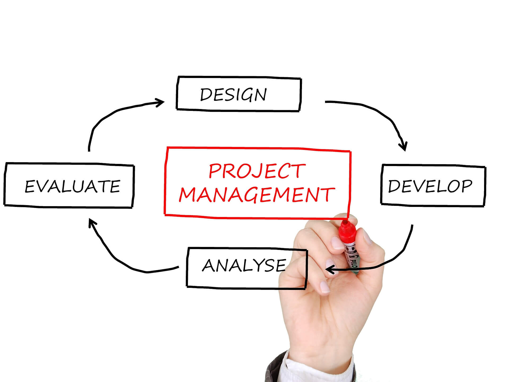

Task
Detailed statement of work that accompanies a task order in construction contracts.

Progect Managment
Huge online community of Project Managers offering over 12000 how-to articles, templates, project plans, and checklists to help you do your job.
Team
A group of employees that works semiautonomously on recurring tasks.

Daylis
In Scrum, on each day of a sprint, the team holds a daily scrum meeting called the "daily scrum.” Meetings are typically held in the same location and at the same ...